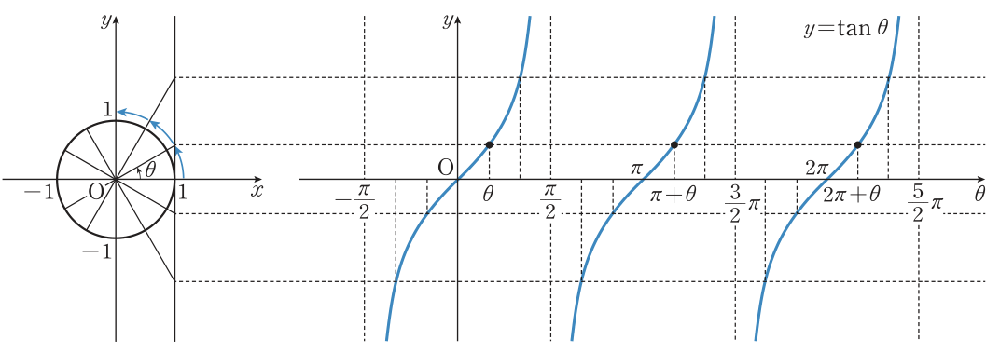
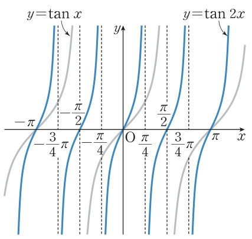

2026학년도 1학기 | 대수
지난 시간에 \(\sin\theta\)는 단위원 위 점 P의 \(y\)좌표, \(\cos\theta\)는 \(x\)좌표로 읽었다. 그렇다면 \(\tan\theta=\dfrac{y}{x}\) 는 단위원 그림의 어디에서 읽을 수 있을까?
[개방형 발문] 점 \(\mathrm{A}(1,0)\)에서 단위원에 접선 \(l\)을 긋고, 동경 OP(또는 그 연장선)와 \(l\)의 교점을 T라 하자. ① \(\theta\)가 \(0\)에서 \(\dfrac{\pi}{2}\)에 가까워지면 점 T는 어떻게 움직일까? ② \(\theta=\dfrac{\pi}{2}\)이면 어떤 일이 생길까? ③ 사인·코사인 그래프와 무엇이 다를까?
[연결] T의 \(y\)좌표가 바로 \(\tan\theta\)다. \(\theta\)가 \(\dfrac{\pi}{2}\)에 다가가면 T는 끝없이 올라가고, \(\theta=\dfrac{\pi}{2}\)에서는 동경이 \(l\)과 평행해 만나지 않는다. 그래서 탄젠트 그래프는 끊어지고, 끊어진 자리에 점근선이 생긴다. 오늘은 ① 그래프와 정의역·치역, ② 점근선, ③ 대칭과 주기 \(\pi\), ④ \(y=\tan ax\)의 주기·점근선을 다룬다.
각 \(\theta\)의 동경과 단위원의 교점을 \(\mathrm{P}(x,y)\)라 하자. \(\theta\ne n\pi+\dfrac{\pi}{2}\) (\(n\)은 정수)일 때, 점 \(\mathrm{A}(1,0)\)에서의 접선 \(l\)과 동경 OP 또는 그 연장선의 교점을 \(\mathrm{T}(1,t)\)라 하면
\(\tan\theta=\dfrac{y}{x}=\dfrac{t}{1}=\) \(t\) (점 T의 \(y\)좌표)
한편 \(\theta=n\pi+\dfrac{\pi}{2}\)이면 동경 OP가 \(y\)축 위에 있어 점 P의 \(x\)좌표가 \(0\)이므로 \(\tan\theta\)의 값은 정의되지 않는다. 즉 \(\theta=\pm\dfrac{\pi}{2},\ \pm\dfrac32\pi,\ \pm\dfrac52\pi,\ \cdots\) 에서 정의되지 않는다.

점근선: 그래프가 직선 \(x=n\pi+\dfrac{\pi}{2}\)에 한없이 가까워지지만 만나지는 않는다. 생각 톡톡: \(y=\tan x\)는 최댓값과 최솟값을 모두 갖지 않는다.
🎯 보기
\(\tan\left(-\dfrac{\pi}{6}\right)=-\tan\dfrac{\pi}{6}=\) \(-\dfrac{\sqrt3}{3}\), \(\tan\dfrac43\pi=\tan\left(\pi+\dfrac{\pi}{3}\right)=\tan\dfrac{\pi}{3}=\) \(\sqrt3\)
주의: 사인·코사인의 주기는 \(2\pi\), 탄젠트의 주기는 \(\pi\). 그래서 \(\tan(\pi+x)=\tan x\) 이고, \(x\) 대신 \(-x\)를 넣으면 \(\tan(\pi-x)=-\tan x\).

예제 4 \(y=\tan 2x\): \(\tan 2x=\tan(2x+\pi)=\tan 2\left(x+\dfrac{\pi}{2}\right)\) 이므로 주기 \(\dfrac{\pi}{2}\).
\(2x=n\pi+\dfrac{\pi}{2}\) 에서 점근선은 직선 \(x=\dfrac{n}{2}\pi+\dfrac{\pi}{4}\) (\(n\)은 정수).
\(y=\tan ax\) 의 주기 \(=\dfrac{\pi}{|a|}\) (단, \(a\ne 0\))
🎯 보기 — 일반각을 \(0^\circ\)~\(90^\circ\)로 바꿔 삼각함수표 읽기
\(\tan 131^\circ=\tan(180^\circ-49^\circ)=\tan(-49^\circ)=-\tan 49^\circ\), 삼각함수표에서 \(\tan 49^\circ=1.1504\) 이므로 \(\tan 131^\circ=\) \(-1.1504\)
대칭·주기 \(\pi\)로 탄젠트 값을 구하는 단계
평행이동한 탄젠트의 주기·점근선, 삼각함수표 활용
"틀려야 는다!" 주기 \(\dfrac{\pi}{|b|}\)와 한 점으로 계수 찾기
사인·코사인 습관대로 \(\dfrac{2\pi}{b}=\dfrac{\pi}{3}\)에서 \(b=6\)이라 쓰면 틀린다. 탄젠트의 주기는 \(\dfrac{\pi}{b}\)이다. 또 \(a\)는 최댓값이 아니다 — 탄젠트는 최댓값이 없다.
STEP 1 — 주기: \(\dfrac{\pi}{b}=\dfrac{\pi}{3}\) 이므로 \(b=3\).
STEP 2 — 한 점 대입: \(2=a\tan\left(3\times\dfrac{\pi}{12}\right)=a\tan\dfrac{\pi}{4}=a\).
결론: \(a=2,\ b=3\) → \(y=2\tan 3x\) (점근선 \(x=\dfrac{n}{3}\pi+\dfrac{\pi}{6}\)).
📖 출처: 자체 출제 · 세 삼각함수의 주기 비교 (유형)
난이도 ★★★ (5분) · 핵심: 사인·코사인 \(\dfrac{2\pi}{|b|}\) vs 탄젠트 \(\dfrac{\pi}{|b|}\)
함정: \(p_3=\dfrac{2\pi}{3}\)으로 계산하면 \(\dfrac{17}{3}\pi\)가 되어 보기에 없다 — 탄젠트의 주기는 \(\pi\)가 기준.
📖 출처: 자체 출제 · 제한된 범위에서 탄젠트의 최대·최소 (유형)
난이도 ★★★ (6분) · 핵심: 점근선 사이 한 가지(\(-\dfrac{\pi}{2}\lt x\lt\dfrac{\pi}{2}\))에서 \(y=\tan x\)는 계속 증가
핵심: \(y=\tan x\)는 정의역 전체에서는 최댓값·최솟값이 없지만, 점근선을 포함하지 않는 닫힌 범위로 제한하면 양 끝에서 최댓값·최솟값을 갖는다.
스마트폰으로 우측 QR코드를 스캔하여, 아래 3가지 유형 중 하나 이상을 체크하고 통합 서술형으로 작성해 제출한다.